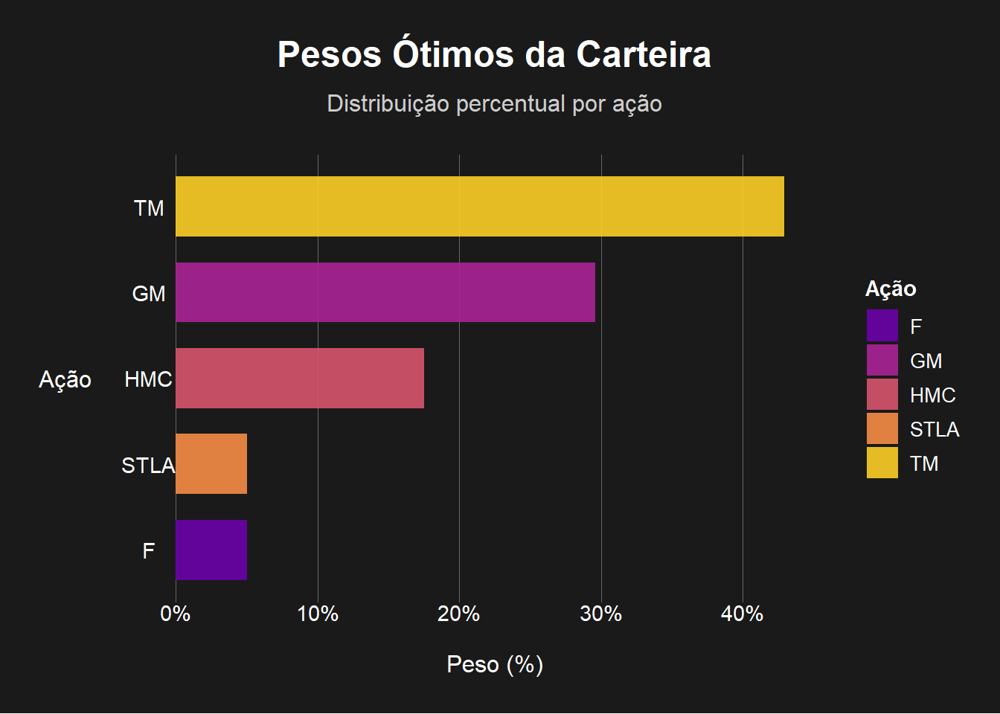

Modelo de Markowitz
📊 Otimização de Carteira
📈 O que é?
O modelo de Markowitz, também chamado de Teoria Moderna de Portfólios, busca construir uma carteira de ativos que ofereça o melhor equilíbrio possível entre risco e retorno.
⚙️ Como funciona o modelo?
Entradas principais:
🔸 Retorno esperado de cada ativo
🔸 Matriz de covariância dos retornos (risco e correlação entre os ativos)
O objetivo do modelo é: Minimizar a volatilidade (risco) da carteira
Sujeito a:
✅ O retorno da carteira ser igual a um alvo (target_return)
✅ A soma dos pesos ser igual a 1 (100% do capital investido)
✅ (Opcional) Pesos ≥ 0 → não permite venda a descoberto (short)
| Simulação de Retorno Mensal (21 dias úteis) | |||
|---|---|---|---|
| Investindo US$1.000 por ação | |||
| Ação | 🔻 Pessimista | 🔸 Realista | 🔺 Otimista |
| F | $887.19 | $1,013.84 | $1,140.49 |
| GM | $888.82 | $1,012.56 | $1,136.30 |
| HMC | $923.23 | $1,005.52 | $1,087.82 |
| TM | $932.47 | $1,008.83 | $1,085.18 |
⚠️ Por que algumas ações ficaram com peso baixo no meu modelo de Markowitz?
No nosso Modelo de Markowitz, o objetivo é encontrar a carteira de investimentos que ofereça o melhor equilíbrio entre risco e retorno. Quando uma ação como a STLA (ou qualquer outra) termina com um peso baixo ou até zero, isso significa que o algoritmo, com base nas características estatísticas dos ativos, entendeu que incluí-la em maior proporção não contribuiria para otimizar o portfólio. As razões comuns para isso são:
✔️ 1. Retorno Ajustado ao Risco Desfavorável: A ação possui um retorno esperado que, quando comparado ao nível de risco que ela adiciona à carteira, não é considerado eficiente em relação às outras ações disponíveis.
✔️ 2. Alta Correlação com Outros Ativos: Se a ação tem uma correlação muito forte com outras ações já presentes na carteira (por exemplo, com GM ou TM), o modelo pode preferir os ativos que oferecem uma combinação de retorno e risco mais vantajosa, sem a necessidade de replicar a exposição ao risco.
✔️ 3. Solução de Canto (Corner Solution): Em otimizações que impõem restrições de peso mínimo (como peso ≥ 0, que impede vendas a descoberto), é comum que alguns ativos sejam completamente removidos da carteira (peso zero). Isso ocorre porque, para atingir o retorno desejado da forma mais eficiente possível, esses ativos não são essenciais ou podem até prejudicar a otimização.
📊 Analogia Simples:
Imagine que estamos montando um time de futebol ideal. Se temos dois jogadores que desempenham a mesma função e um deles entrega um desempenho superior com menor custo (risco), escolheríamos apenas o melhor. O modelo de Markowitz faz exatamente isso, mas com o “desempenho” sendo o retorno e o “custo” sendo o risco da ação.
🔥 Conclusão Prática:
É importante ressaltar que o modelo não está dizendo que uma ação com peso baixo é “ruim” isoladamente.
Ele simplesmente indica que, para o retorno desejado e considerando as características estatísticas (volatilidade e correlação) de todos os ativos, essa ação específica não contribui para melhorar a carteira no ponto ótimo que foi calculado. Se os parâmetros da otimização forem alterados (como o retorno-alvo ou a permissão para vendas a descoberto), a contribuição e o peso dessa ação na carteira podem mudar significativamente.